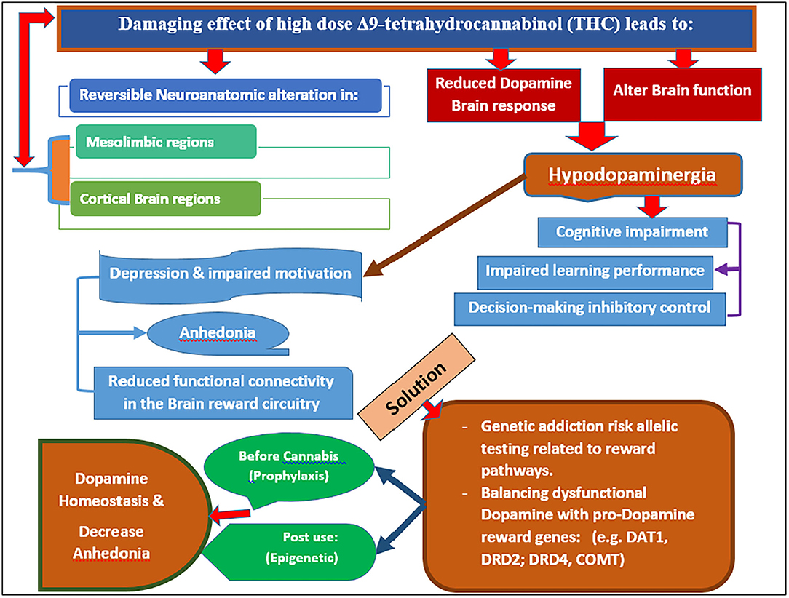

The Risks of Cannabis Use
Excessive or irresponsible cannabis use can lead to health problems such as respiratory issues (when smoked), decreased motivation, and impaired memory and concentration. Some studies suggest a correlation between heavy cannabis use and an increased risk of mental health disorders, including anxiety, depression, and in severe cases, psychosis. Additionally, cannabis can impair motor skills and reaction times, raising concerns about public safety, particularly when driving under the influence.

While cannabis does offer medical benefits, critics argue that its recreational use poses risks, including impaired cognitive function, dependency, and potential mental health issues. There are also concerns about the long-term effects of frequent cannabis use, particularly on developing brains in adolescents. Even with medical use, proper dosing and medical supervision are critical to avoid negative side effects.
